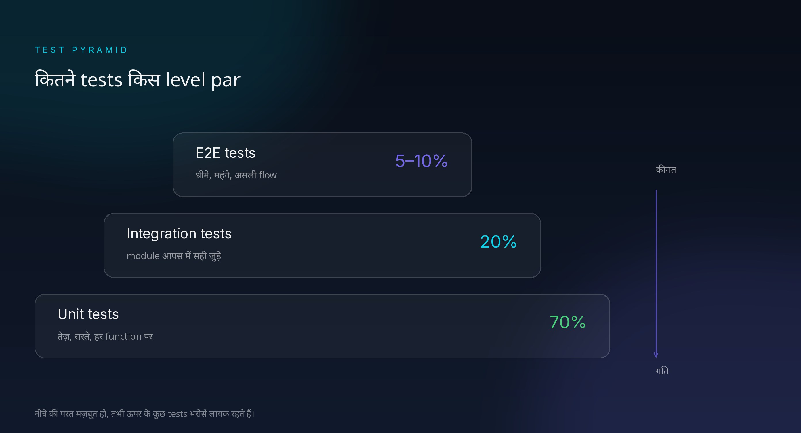

Unit Testing Kya Hai? Pehla Test Kaise Likhen
किसी senior developer से पूछें कि सबसे ज़्यादा समय किस चीज़ में जाता है, तो अक्सर जवाब आता है — "पुराना code तोड़े बिना नया जोड़ने में"। unit testing इसी डर को कम करती है। यह कोई औपचारिकता नहीं, बल्कि एक छोटी आदत है जो हर बदलाव के बाद भरोसा देती है कि जो पहले चल रहा था, वह अब भी चल रहा है।
इस आर्टिकल में मैं समझाऊँगा कि unit testing kya hai, यह integration और end-to-end testing से कैसे अलग है, पहला test कैसे लिखें, AAA pattern क्या है, mock और stub कब चाहिए, coverage का कितना भरोसा करें, कौन से tools आम हैं, और वे पाँच गलतियाँ जो tests को बोझ बना देती हैं।
छोटा जवाब: unit test एक छोटे code unit — आमतौर पर एक function या method — के लिए लिखा गया स्वचालित जाँच है, जो तेज़ चलता है और बताता है कि उसका व्यवहार बदला है या नहीं। पहला test लिखने के लिए एक function चुनें, उसका एक अपेक्षित नतीजा लिखें, और चलाकर देखें कि test पहले fail होता है।
Unit testing kya hai, ek line me
unit test वह code है जो आपके code को चलाकर देखता है और तय करता है कि नतीजा सही है या नहीं। "unit" का मतलब सबसे छोटा अर्थपूर्ण हिस्सा है — जैसे price में discount लगाने वाला function, या date को format करने वाला function।
इसका सबसे बड़ा फायदा गति है। एक अच्छा unit test मिलीसेकंड में चलता है, इसलिए आप सौ बार चला सकते हैं। जब आप कोई बदलाव करते हैं और पाँच मिनट बाद 200 tests हरे दिखते हैं, तो आपको भरोसा होता है — अनुमान नहीं, प्रमाण।
दूसरा फायदा यह है कि test एक तरह का दस्तावेज़ बन जाता है। नया developer code पढ़कर नहीं, tests पढ़कर समझ जाता है कि function से क्या उम्मीद है। "जब cart खाली हो तो delivery charge शून्य होगा" — यह वाक्य किसी comment से ज़्यादा भरोसेमंद है, क्योंकि यह चलता है।
Unit, integration aur end-to-end me farq
तीनों testing के स्तर हैं, और तीनों की ज़रूरत है। फर्क यह है कि हर स्तर कितना कवर करता है और कितना महंगा है।
| स्तर | क्या जाँचता है | गति | कब fail होता है |
|---|---|---|---|
| Unit | एक function या class | मिलीसेकंड | logic बदला |
| Integration | दो या ज़्यादा हिस्से साथ | सेकंड | जुड़ाव टूटा, query गलत |
| End-to-end | पूरा user flow | मिनट | screen, network या config |
एक उदाहरण — login का flow। unit test जाँचेगा कि password hash सही बनता है या नहीं। integration test जाँचेगा कि database से user मिलता है और session बनता है। end-to-end test जाँचेगा कि असली browser में form भरने पर dashboard खुलता है।
तीनों को एक जैसा न समझें। unit test तेज़ और सस्ता है, इसलिए उसकी संख्या सबसे ज़्यादा होनी चाहिए। end-to-end test धीमा और नाज़ुक होता है, इसलिए सिर्फ सबसे ज़रूरी flows के लिए।

Pehla test kaise likhen
शुरुआत में पूरे project को test से ढकने की कोशिश न करें। एक function चुनें जो सबसे ज़्यादा बदलता है या जिसमें गलती सबसे महंगी है — जैसे discount, tax, या date की गणना।
- function का एक साफ उदाहरण लिखें। इनपुट क्या है और अपेक्षित आउटपुट क्या है — यह कागज़ पर लिखें।
- test लिखें और चलाएँ। पहली बार वह fail होना चाहिए, क्योंकि अभी जाँचने वाला code नहीं है या आपने गलत उम्मीद लिखी है। fail देखना ज़रूरी है, वरना पता नहीं चलेगा कि test सच में कुछ जाँच रहा है।
- अब function को पूरा करें ताकि test पास हो।
- एक और केस जोड़ें — जैसे खाली इनपुट, या ऋणात्मक संख्या।
- code साफ करें और tests फिर चलाएँ।
यह क्रम TDD (test-driven development) कहलाता है। ज़रूरी नहीं कि हर बार इसी क्रम में चलें, पर शुरुआत में यह मदद करता है — क्योंकि यह सोचने पर मजबूर करता है कि function से क्या उम्मीद है।
AAA pattern — test ka dhancha
हर अच्छा test तीन हिस्सों में होता है — Arrange, Act, Assert। पहले हालात बनाएँ, फिर काम करें, फिर नतीजा जाँचें।
// Arrange
const cart = { items: [{ price: 500, qty: 2 }], coupon: null };
// Act
const total = calculateTotal(cart);
// Assert
expect(total).toBe(1000);
यह ढाँचा छोटा लगता है, पर इसका फायदा बड़ा है — जब test fail हो, तो तुरंत पता चलता है कि गड़बड़ हालात बनाने में है, काम करने में है, या उम्मीद में। तीनों को मिलाकर लिखने से पढ़ना मुश्किल हो जाता है।
आगे दो बातें जोड़ें — test का नाम ऐसा हो कि वह व्यवहार बताए ("खाली cart पर delivery charge शून्य होता है"), और एक test में एक ही बात जाँचें। जो test पाँच चीज़ें जाँचता है, वह fail होने पर पाँच में से कौन सी टूटी, यह नहीं बताता।
Mock, stub aur fake — kab chahiye
असली code अकेला नहीं चलता; वह database, API, email service और समय पर निर्भर होता है। unit test में इन सबको असली रूप में चलाना महंगा और धीमा है, इसलिए उनकी नकल लगाई जाती है।
stub एक तय जवाब देता है — जैसे "user मिल गया"। mock यह भी जाँचता है कि उसे सही तरीके से बुलाया गया या नहीं। fake एक हल्का असली जैसा काम करता है, जैसे memory में चलने वाला database।
सावधानी यह है कि ज़्यादा mock करने से test उस चीज़ को जाँचने लगता है जो असल में हो ही नहीं रही। अगर आपने database का mock बनाया और उसी mock की गलत मान्यता पर test पास हो गया, तो असली database पर गड़बड़ होगी।
एक साधारण नियम — अपने ही code को mock न करें। जो code आप खुद लिख रहे हैं, उसे असली रूप में चलाएँ; बाहरी सेवाओं को नकल से बदलें।
Kya test karen aur kya na karen
हर function के लिए test लिखना ज़रूरी नहीं। जिन चीज़ों को test करना सबसे ज़्यादा फायदा देता है, वे ये हैं —
- पैसे, tax, discount और commission की गणना।
- date, timezone और महीने के अंत जैसे मामले।
- अनुमति और भूमिका के नियम — कौन क्या देख सकता है।
- data का बदलना — format, validation और सीमाएँ।
- वे जगहें जहाँ पहले bug आ चुका है। हर bug के लिए एक test लिखें, ताकि वह लौटकर न आए।
जिन चीज़ों पर समय बर्बाद होता है — सिर्फ getter और setter, framework का अपना काम, और वह code जो हफ्ते में बदलता है और जिसकी गलती सस्ती है (जैसे किसी button का रंग)।
एक और बात — जो code test करना मुश्किल लगे, वह अक्सर बहुत ज़्यादा काम एक साथ कर रहा होता है। test लिखने में अटकना design का संकेत भी हो सकता है।
regression test का नाम सुनकर घबराएँ नहीं। यह कोई अलग किस्म का test नहीं होता — यह वही unit test है जो किसी पुराने bug के बाद लिखा गया, ताकि वही गलती दोबारा न हो। हर बार जब किसी bug का कारण मिले, उसी दिन एक छोटा test जोड़ दें। साल भर में यही छोटी आदत सबसे मज़बूत सुरक्षा बन जाती है।
Coverage ka sahi matlab
coverage बताता है कि आपके code की कितनी lines test के दौरान चलीं। यह एक उपयोगी संकेत है, पर लक्ष्य नहीं। 100 प्रतिशत coverage वाला code भी गलत हो सकता है, क्योंकि coverage यह नहीं बताता कि आपने सही चीज़ जाँची।
व्यवहार में 70–85 प्रतिशत coverage ज़्यादातर projects के लिए ठीक है, बशर्ते ज़रूरी हिस्से — पैसा, अनुमति, data — पूरे ढके हों। बाकी lines के लिए test लिखने में जो समय जाता है, वह अक्सर कहीं और ज़्यादा फायदा देता है।
coverage को लक्ष्य बनाने का एक नुकसान यह है कि लोग ऐसे test लिखने लगते हैं जो सिर्फ line चलाते हैं, कुछ जाँचते नहीं। ऐसे test हरे दिखते हैं और किसी काम के नहीं होते।
Tools jo aam hain
भाषा के हिसाब से tool बदलता है, पर काम एक ही है — test लिखना, चलाना और नतीजा दिखाना।
- JavaScript / TypeScript: Jest, Vitest, Mocha।
- Python: pytest, unittest।
- Java: JUnit, TestNG।
- PHP: PHPUnit, Pest।
- C#: NUnit, xUnit।
इनके साथ एक coverage tool और CI जोड़ दें, ताकि हर push पर tests अपने आप चलें। जो test किसी के अपने laptop पर ही चलता है, वह असल में कभी नहीं चलता।
Test ko padhne layak kaise rakhen
test भी code है, और उसे पढ़ा जाएगा — अक्सर छह महीने बाद, खुद आप। तीन आदतें इसे आसान रखती हैं।
नाम में व्यवहार लिखें। "test1", "test2" किसी काम के नहीं। "खाली सूची पर कुल शून्य होता है" — यह नाम fail होने पर भी समझा देता है कि क्या टूटा।
एक test, एक कारण। अगर test में तीन अलग जाँच हैं, तो उसे तीन tests में बाँटें। इससे पता चलता है कि कौन सा व्यवहार बदला।
जादुई संख्याएँ हटाएँ। अगर test में 1000 लिखा है, तो एक चर बनाएँ जिसका नाम बताए कि 1000 क्या है — जैसे कर की दर या इकाइयों की संख्या।
एक और बात — test के लिए अलग मददगार function बनाना ठीक है, जैसे test user बनाने वाला helper। इससे हर test में पाँच लाइन का setup दोहराना नहीं पड़ता।
5 galtiyan jo tests ko bekaar bana deti hain
पहली — test को code के बाद छोड़ देना। जब deadline नज़दीक हो, तो test पहली चीज़ है जो हटती है। नतीजा — छह महीने बाद कोई भी बदलाव डर के साथ होता है।
दूसरी — बहुत ज़्यादा mock। जब test असली code की जगह नकली दुनिया जाँचने लगे, तो वह भरोसा नहीं देता।
तीसरी — धीमे tests। जो suite दो मिनट में खत्म न हो, लोग उसे बीच में रोक देते हैं। unit tests का पूरा फायदा गति में है।
चौथी — अस्थिर tests (flaky)। जो test कभी पास और कभी fail हो, वह टीम का भरोसा खत्म कर देता है। उसे तुरंत ठीक करें या हटाएँ — बीच का रास्ता नहीं।
पाँचवीं — fail होने पर test बदल देना। यह सबसे खतरनाक आदत है। test fail हो तो पहले यह देखें कि code सही है या नहीं। अगर उम्मीद गलत थी, तो बदलें — पर कारण लिखकर।
मैंने unit testing से क्या सीखा
सबसे बड़ी सीख यह रही कि test लिखने का असली फायदा bug पकड़ना नहीं, डिज़ाइन सुधरना है। जब मैंने एक बड़े function का test लिखना शुरू किया, तो पता चला कि उसे चलाने के लिए आठ चीज़ें तैयार करनी पड़ती हैं। उसी दिन समझ आया कि function बहुत काम एक साथ कर रहा है। टुकड़ों में बाँटने के बाद test आसान हो गए और code भी साफ।
दूसरी सीख — जो test पहले fail नहीं हुआ, वह कुछ जाँच ही नहीं रहा। शुरू में मैंने कुछ tests लिखे जो हमेशा पास होते थे; बाद में पता चला कि उनमें गलत value compare हो रही थी। अब मैं हर नए test को पहले जान-बूझकर fail देखता हूँ।
तीसरी सीख — 100 प्रतिशत coverage का पीछा समय की बर्बादी है। जब हमने लक्ष्य 75 प्रतिशत रखा और पैसे तथा अनुमति वाले हिस्सों पर पूरा ध्यान दिया, तो असली bugs पकड़ने की दर बढ़ी, जबकि test लिखने का समय घटा।
अक्सर पूछे जाने वाले सवाल
क्या हर function का test लिखना चाहिए?
नहीं। जहाँ logic है, पैसा है, अनुमति है या पहले bug आ चुका है — वहाँ ज़रूर लिखें। सीधे getter और framework के काम छोड़ सकते हैं।
unit test और integration test में क्या चुनें?
दोनों। unit test ज़्यादा और तेज़ रखें, integration test कुछ ज़रूरी जोड़ों के लिए। सिर्फ एक पर निर्भर रहना अधूरा है।
test लिखने में समय ज़्यादा लगता है?
पहली बार हाँ, पर वह समय बाद में bug ढूँढने से बचता है। जो टीम test लिखती है, उसका debugging समय आमतौर पर कम होता है।
क्या AI से test लिखवा सकते हैं?
ड्राफ्ट के लिए मदद ली जा सकती है, पर हर test को खुद पढ़ें — खासकर अपेक्षित नतीजा। AI अक्सर ऐसा test लिख देता है जो code की गलती को भी सही मान लेता है।
पुराने project में test कहाँ से शुरू करें?
उस हिस्से से जो सबसे ज़्यादा बदलता है या जिसमें सबसे ज़्यादा शिकायतें आती हैं। एक-एक function लें; पूरे project को एक साथ ढकने की कोशिश न करें।
अगर आप software टीम के साथ काम कर रहे हैं, तो Agile methodology की गाइड और project management tools वाला आर्टिकल काम आएंगे। तकनीकी ढाँचे के लिए Kubernetes architecture पढ़ें।
आगे पढ़ें: test लिखने के सिद्धांत Martin Fowler की testing सूची पर पढ़ें, और test pyramid की चर्चा Practical Test Pyramid में देखें। हर tool का तरीका अलग होता है, इसलिए अपनी भाषा का आधिकारिक दस्तावेज़ देखें।